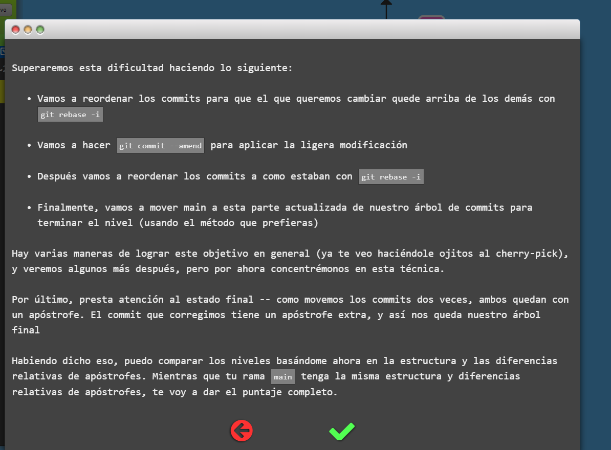
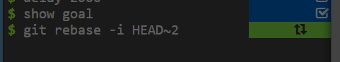
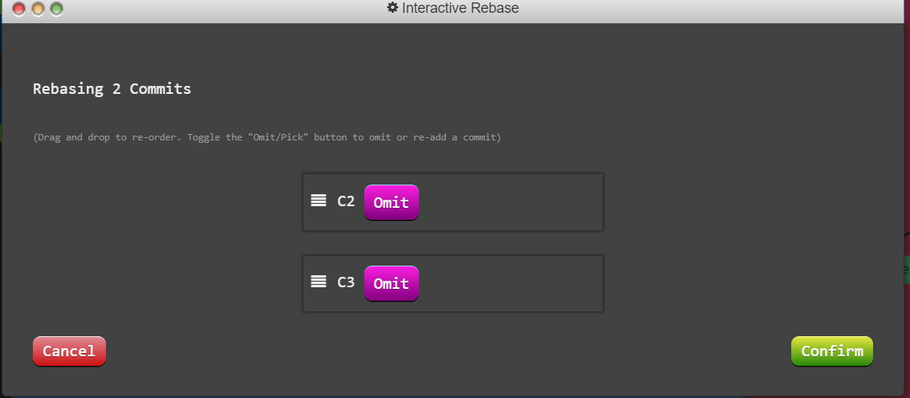
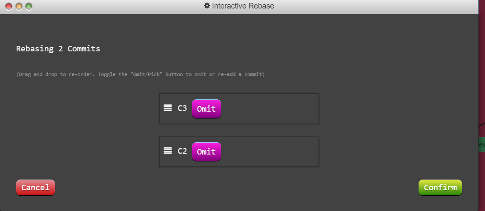
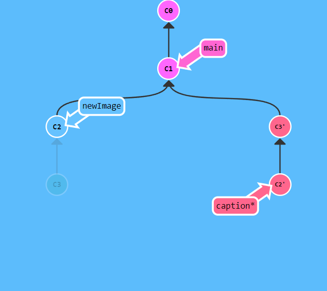
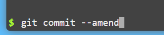
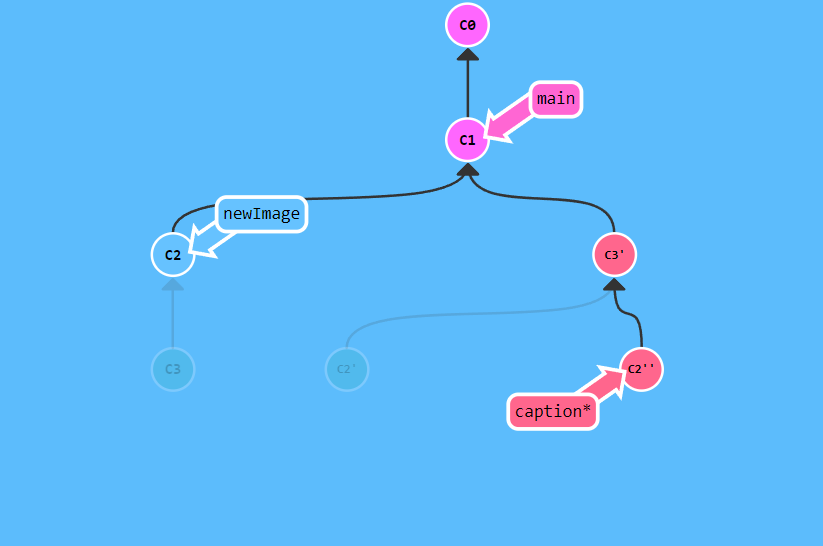
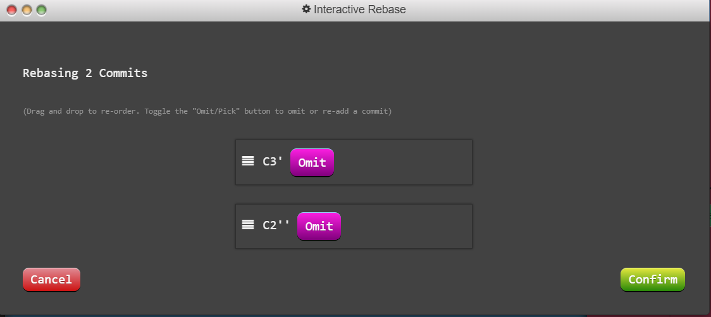
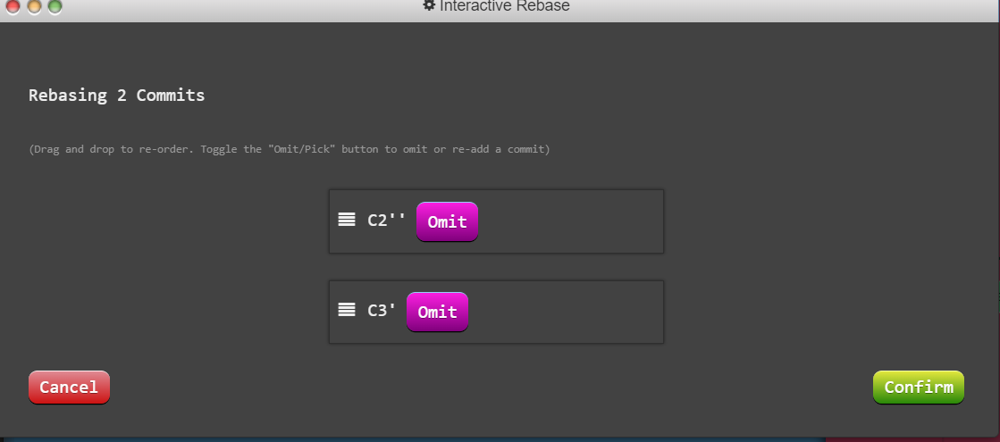

En el primer ejercicio lo que nos pide realizar es lo siguiente: En el ejercicio tenemos varios commits sobrepuestos es decir, uno encima de otro. En git es que solo se pueden realizar modificaciones al último commit . El problema es que a veces se necesita realizar modificaciones a un commit previo. En este ejercicio lo que se pide es realizar modificaciones en las dimensiones de newImage,aunque se encuentre más atrás en el historial:

A continuación nos muestran los pasos que debemos de seguir para conseguir este nivel:
En primer lugar realizamos el siguiente comando:
Con ese comando lo que estamos indicando al programa es que queremos realizar cambios en los dos últimos commits registrados en git, de tal modo que al indicar -i indicamos que estamos eligiendo la opción interactiva,esto permite configurar el rebase a nuestra preferencia. Por ellos que a continuación se escribe HEAD~2 para indicar que queremos utilizar los últimos dos commits del historial.
A continuación nos sale esta ventana,aquí cambiaremos el orden de tal modo que la última modificación que salga sea C2 (que es la que se quiere modificar ).
Ahora quedaría tal que así, el siguiente paso sería dar a modificar para ver cómo queda.
Como podemos ver el orden de los commits se ha cambiado
Ahora aplicamos este comando , aquí es donde incluimos las modificaciones al commit más reciente que ene ste caso sería C2.
Como podemos observar se ha creado un nuevo commit con en este caso la modificación, El comando commit --amend no se limita a alterar el commit más reciente , sino que lo remplaza por completo ,es decir, para git se verá como un commit nuevo con un * en el diagrama. Lo siguiente que nos pide el ejercicio es reordenar los commits a como estaban con git rebase -i . Para ello volvemos a escribir git rebase -i HEAD~2 en este caso pondremos el C2 mas arriba ya que queremos que vuelva a estar en una situación previa.
Nos sale así, como podemos observar el C2 tiene una comilla más que indica el número de modificaciones, ahora cambiaremos el orden para volver a la situación inicial. Tiene que quedar así:
Tras este paso se crea una nueva rama con el resultado final.

Este sería el resultado . Por último , el ejercicio nos pide mover main a la parte actualizada. Una opción es hacerlo con el cherry-pick pero esta no la podemos utilizar ,asique utilizaremos dos comandos. El primer comando que utilizamos es git checkout main para que así la cabeza y por tanto sobre el que realizamos los cambios sea main ya que podemos observar que hasta este momento lo era caption.

Este es el comando, y así queda el resultado:

Si observamos en la captura del diagrama anterior el asterisco lo tenía caption. Ahora tendriamos que utilizar el comando git rebase caption, para indicar al programa que queremos que baje main a las modificaciones finales de c3.

Este sería el comando. Este es el resultado final: